MANTENIMIENTO Y REPARACIÓN
servicio con vehículo en marcha


Procedimiento de comprobación del nivel de aceite de la caja de cambios
Herramientas necesarias
DW260-070 Extractor / instalador de tapón
Procedimiento de inspección
- Arranque el motor y déjelo en ralentí durante, aproximadamente, 5 minutos o, si es posible, haga un recorrido de unos kilómetros (millas) para que el aceite de la caja de cambios se caliente. Compruebe el nivel de aceite cuando la caja de cambios tenga una temperatura de más de 30° C(86°F).
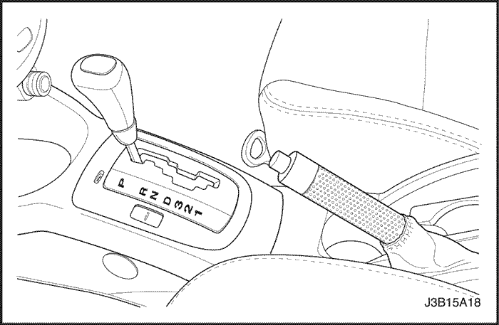
- Pise el pedal del freno y mueva la palanca de cambios por los alcances de engranajes, haciendo una pausa de unos segundos en cada alcance. Vuelva a poner la palanca de cambios en la posición de estacionamiento. (Conducción a la izquierda mostrada; conducción a la derecha, similar.)

- Elevar y sostener el vehículo de forma apropiada.
- Coloque un recipiente debajo del tapón del nivel de aceite.
Precaución: No desmonte el tapón del nivel de aceite, si el aceite de la caja de cambios está caliente. Eso puede producir lesiones si sale aceite por el orificio del tapón.
- Desmonte el tapón del nivel de aceite, utilizando el extractor / instalador de tapón DW260-070. Como la caja de cambios funciona correctamente dentro de una gama de niveles, el aceite puede salir o no por el orificio del tapón cuando se desmonte este último.

- Controle el nivel del aceite. Si no sale aceite por el orificio del tapón después de añadir un total de 4 litros, ello significa que la caja de cambios no tenía suficiente aceite, o que hay una fuga de aceite en la misma. Revise la caja de cambios para ver tiene alguna fuga de aceite. Antes de ajustar el nivel de aceite de la caja de cambios, repare las fugas que podría haber.

- Monte el tapón del nivel de aceite, utilizando el extractor/ instalador de tapón DW260-070.
Apretar
Apriete el tapón a 45 N•m (33 lbs-pie).
- Una vez terminado el procedimiento de comprobación del nivel de aceite, limpie el aceite que haya podido caer sobre la carcasa de la caja de cambios, con un paño o toalla de taller. Además, compruebe que el tapón de llenado de aceite y el tubo del respiradero estén montados correctamente.

Cambio de aceite
Herramientas necesarias
DW260-070 Extractor / instalador de tapón
Procedimiento de montaje y desmontaje
- Elevar y sostener el vehículo de forma apropiada.
- Coloque un recipiente debajo del tapón de drenaje de aceite.
- Desmonte el tapón de drenaje de aceite de la caja de cambios, utilizando el extractor / instalador de l tapón DW260-070.
Apretar
Apriete el tapón a 45 N•m (33 lbs-pie).
- Adición de aceite a la caja de cambios. Consulte el apartado "Procedimiento de comprobación del nivel de aceite de la caja de cambios" en esta sección.
- Conecte el cable negativo de la batería.
Ajuste del nivel de aceite después del mantenimiento
- Añada aceite de caja de cambios a través del orificio del tapón de llenado, antes de ajustar el nivel de aceite. La cantidad de aceite a añadir, debe basarse en el tipo de mantenimiento realizado.
Aviso de ajuste
- Utilice sólo aceite de caja de cambios ESSO LT 71141 ó TOTAL ATF H50235.
- Cárter de aceite desmontado: 4 l (4,2 cuartos)
- Convertidor de par desmontado: 2 l (2,1 cuartos)
- Revisión completa: 6,9 ±0,2 l (7,3±0,2 cuarto)
- Tapón de drenaje desmontado: 4 l (4,2 cuartos)
- Compruebe el nivel de aceite de la caja de cambios. Consulte el apartado "Procedimiento de comprobación del nivel de aceite de la caja de cambios" en esta sección.
- Añada aceite adicional a través del orificio del tapón de llenado, en incrementos de 0,5 litro (0,5 cuarto) hasta que el aceite comience a salir por el orificio del tapón.
- Deje que el aceite termine de salir por el orificio del tapón; a continuación, monte el tapón del nivel de aceite.
- Una vez terminado el procedimiento de reglaje del nivel de aceite, limpie el aceite que haya podido caer sobre la carcasa de la caja de cambios, con un paño o toalla de taller. Además, compruebe que el tapón de llenado de aceite y el tubo del respiradero estén instalados correctamente.
Reparación de las fugas de aceite
Localización de fugas
Método general
- Compruebe que la fuga sea de aceite de la caja de cambios.
- Limpie minuciosamente el área sospechosa de la fuga.
- Haga un recorrido unos 25 kilómetros (15 millas) o hasta que la caja de cambios alcance la temperatura de funcionamiento normal, 88°C (190°F).
- Estacione el vehículo sobre papel o cartón limpio.
- Apague el motor y mire si hay manchas de aceite en el papel.
- Haga las reparaciones necesarias para corregir la fuga.
Método del polvo
- Limpie minuciosamente el área sospechosa de la fuga.
- Aplique un polvo de tipo aerosol (talco para los pies) sobre el área donde se sospeche que se encuentra la fuga.
- Haga un recorrido unos 25 kilómetros (15 millas) o hasta que la caja de cambios alcance la temperatura de funcionamiento normal, 88°C (190°F).
- Desconecte el motor.
- Inspeccione el área sospechosa de la fuga y trace su paso por el polvo, para encontrar la fuente de la fuga.
- Haga las reparaciones necesarias.
Reparación de la fuga de aceite
Las causas potenciales de fugas de aceite son las siguientes. Controle y repare, en caso necesario.
- Los sujetadores no están apretados según las especificaciones.
- Las roscas de los tornillos y de los taladros de los tornillos están sucias o corroídas.
- Las juntas, juntas herméticas o manguitos están mal puestos, dañados, deformados o rayados.
- El árbol manual está mellado o dañado.
- Hay un rodamiento perdido o gastado que produce un desgaste excesivo de juntas herméticas o de manguitos.
- Porosidad de caja o de componente.
- El nivel de aceite es demasiado alto.
- Hay un respiradero obturado o tubo de respiración dañado.
- Hay agua o refrigerante en el aceite.
- Los orificios traseros de drenaje de aceite están obstruidos.
Reparación de porosidad de la caja
Precaución: El cemento epoxídico puede producir irritaciones en la piel y daños en los ojos. Lea y siga toda la información de la etiqueta del contenedor suministrada por el fabricante.
- Limpie minuciosamente el área de la reparación con un disolvente de limpieza. Seque al aire el área.
- Siguiendo las instrucciones del fabricante, mezcle una cantidad suficiente de epoxi para hacer la reparación.
- Aplique la resina epoxídica mientras la carcasa de la caja de cambios esté aún caliente. Puede usar un cepillo limpio y seco con ácido de soldar para limpiar el área y también para aplicar el cemento epoxídico. Asegúrese de que esté cubierta por completo toda el área que vaya a ser reparada.
- Deje que seque el cemento epoxídico durante 3 horas, antes de arrancar el motor.
- Repita los procedimientos de diagnóstico de fugas de aceite. Consulte el apartado Diagnóstico y reparación de fugas de aceite" en esta sección.
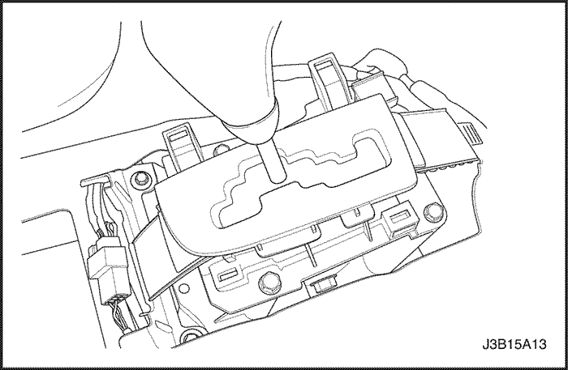
Conjunto de palanca de control de cambios
Procedimiento de desmontaje
- Desconecte el cable negativo de la batería.
- Quite la consola del piso. Consulte Sección 9G, Interiores de carrocería.
- Desconecte los conectores de conmutación eléctrica.
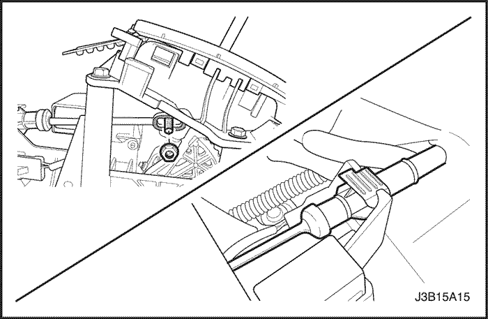
- Quite la contratuerca ajustadora del cable de control de cambios.
- Quite el cable de la abrazadera.
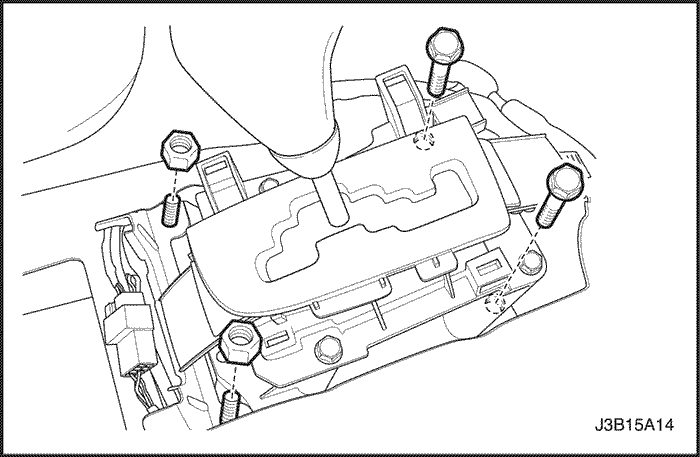
- Desmonte los tornillos y las tuercas que sujetan el conjunto de control de cambios al panel del piso.
- Quite el conjunto de control de cambios.
Procedimiento de montaje
- Instale el conjunto de control de cambios.
Apretar
Apriete los tornillos y las tuercas a 8 N•m (71 lbs-pulg.).
- Instale el cable de control de cambios en la abrazadera.
- Instale la contratuerca ajustadora del cable de control de cambios.
Apretar
Apriete la contratuerca ajustadora del cable de control de cambios a 8 N•m (71 lbs-pulg.).
- Conecte los conectores de conmutación eléctrica.
- Instale la consola del piso. Consulte Sección 9G, Interiores de carrocería.
- Conecte el cable negativo de la batería.

Cable de control de cambios
Procedimiento de desmontaje
- Desconecte el cable negativo de la batería.
- Desmonte el clip de la conexión de la palanca selectora, en la carcasa de la caja de cambios, y desconecte el cable de mando del cambio de marchas, de la conexión de la palanca selectora.
- Desmonte el clip del cable de mando del cambio de marchas, en la conexión del soporte de la caja de cambios.
- Quite la consola del piso. Consulte Sección 9G, Interiores de carrocería.
- Afloje la contratuerca ajustadora del cable de control de cambios.
- Quite el cable de control de cambios del conjunto de control de cambios.
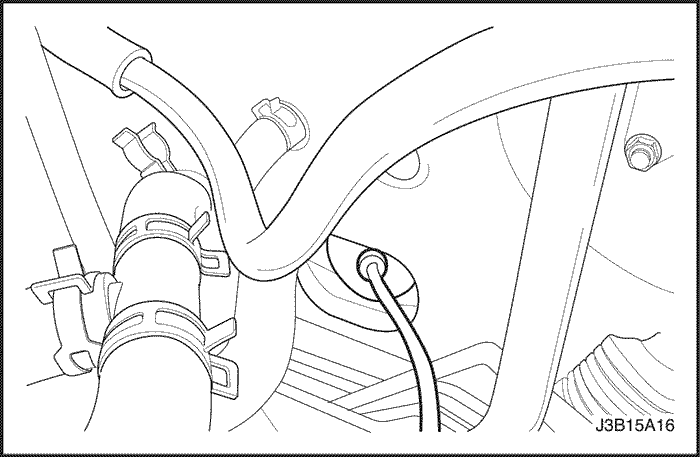
- Desmonte el cable de mando del cambio de marchas, del soporte de la caja de cambios.
- Tire del cable de control de cambios a través de la barrera cortafuegos del vehículo, pasando con él la arandela de goma.
Procedimiento de montaje
- Instale el cable de control de cambios en la barrera cortafuegos del vehículo.
- Monte el cable de mando del cambio de marcha, en el soporte de la caja de cambios.
- Instale el cable de control de cambios en el conjunto de control de cambios.
- Instale la contratuerca ajustadora del cable de control de cambios.
Apretar
Apriete la tuerca a 8 N•m (71 lbs-pulg.).
- Monte el clip en el cable de mando de los cambios de marcha, en la conexión del soporte de la caja de cambios.
- Monte el clip en la conexión de la palanca selectora, en la carcasa de la caja de cambios.
- Ajuste el cable de control de cambios. Consulte el "Ajuste del cable de control de cambios" en esta sección.
- Conecte el cable negativo de la batería.

Ajuste del cable de control de cambios
Procedimiento de ajuste
Es muy importante igualar correctamente la palanca de control de cambios con la conexión de la palanca del selector. Coloque la palanca de control de cambios en la posición P y controle la conexión de la palanca del selector, para ver si está adelante del todo. Si no es así, realice el ajuste siguiente.
- Quite la batería y su alojamiento. Consulte Sección 1E, motor eléctrico.
- Quite la consola del piso. Consulte Sección 9G, Interiores de carrocería.
- Coloque la palanca de control de cambios en la posición P.
- Afloje la contratuerca en la palanca de control de cambios.
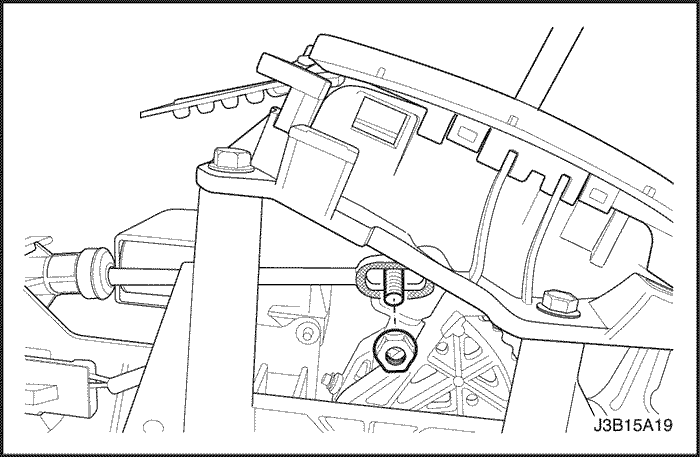
- Coloque la conexión de la palanca selectora en la parte delantera de la carcasa de la caja de cambios.
- Inserte apretadamente el cable de control de cambios en la palanca de control de cambios.
- Fije el cable de mando del cambio de marchas con la contratuerca y el tornillo de ajuste de dicho cable.
Apretar
Apriete la tuerca a 8 N•m (71 lbs-pulg.).
- Instale la consola del piso.
- Instale la batería y su alojamiento. Consulte Sección 1E, motor eléctrico.
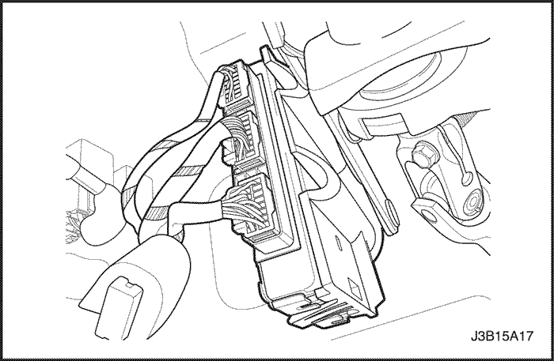
Módulo de control de la caja de cambios (TCM)
Procedimiento de desmontaje
- Desconecte el cable negativo de la batería.
- Desconecte los conectores del cableado.
- Desmonte el módulo de control de la caja de cambios (TCM), de su soporte.
Procedimiento de montaje
- Instale el TCM en la abrazadera.
- Conecte los conectores del cableado.
- Conecte el cable negativo de la batería.
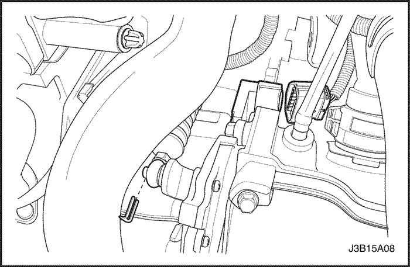
Conmutador de activación estacionamiento/neutral
Procedimiento de desmontaje
- Desconecte el cable negativo de la batería.
- Desconecte el conector eléctrico del conmutador de posición de estacionamiento/neutral.
- Desconecte el cable de control de cambios y la pinza de retención.

- Quite la tuerca de la palanca de cambios y la palanca.

- Quite el conmutador de activación de estacionamiento/neutral.

Herramientas necesarias
Instalador de conmutador DW260-050 P/N
Procedimiento de montaje
- Instale el conmutador de activación de estacionamiento/neutral.
Apretar
Apriete los tornillos a 10 N•m (89 lbs-pulg.).
- Ajuste el conmutador de estacionamiento/neutral usando el instalador de conmutador P/N DW260-050.
Aviso: Al instalar el conmutador de estacionamiento/neutral, use las herramientas de servicio especiales y posicione la palanca de cambios en "Neutral".

- Instale la palanca de cambios y la tuerca de la palanca.
Apretar
Apriete la palanca del cambio de marchas a 10 N•m (89 lbs-pulg.).
- Conecte el cable de control de cambios y la pinza de retención.
- Conecte el conector eléctrico del conmutador de posición de estacionamiento/neutral.
- Conecte el cable negativo de la batería.
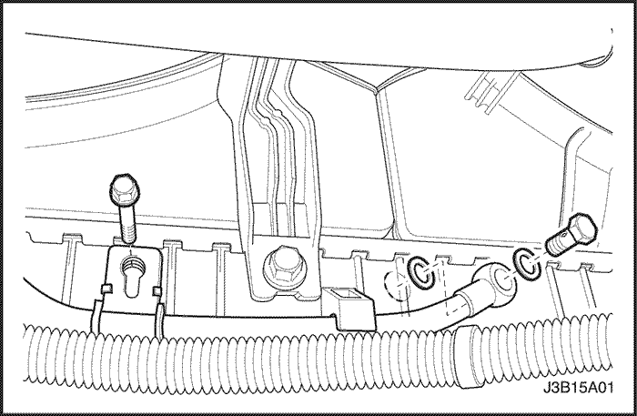
Mangueras/tubos de refrigerante de aceite
Procedimiento de desmontaje
Importante: Coloque un recipiente debajo de las mangueras, para recoger el aceite que salga de las líneas.
- Desconecte el cable negativo de la batería.
- Elevar y sostener el vehículo de forma apropiada.
- Desmonte la cubierta inferior del motor. Consulte Sección 9N, bastidor y bajos de carrocería.
- Desmonte el tornillo del tubo de salida del refrigerante de aceite de la parte inferior derecha del radiador.
- Desmonte el tornillo de la abrazadera del tubo de salida del refrigerante de aceite.
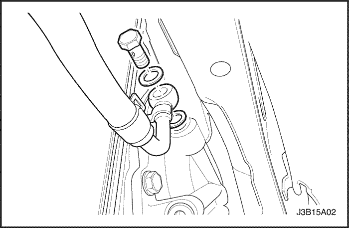
- Desmonte el tornillo del tubo de salida del refrigerador de aceite, del costado de la caja de cambios.
- Quite el conjunto del tubo de salida del refrigerante de aceite.
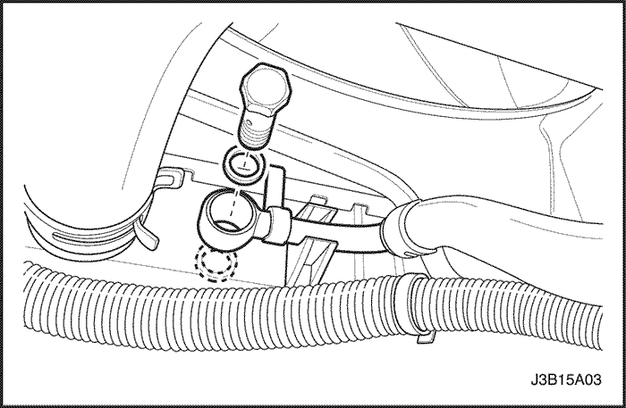
- Desmonte el tornillo del tubo de salida del refrigerante de aceite de la parte inferior izquierda del radiador.
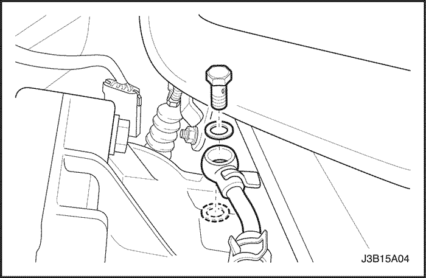
- Desmonte el tornillo del tubo de entrada del refrigerador de aceite, del costado de la caja de cambios.
- Quite el conjunto del tubo de entrada del refrigerante de aceite.
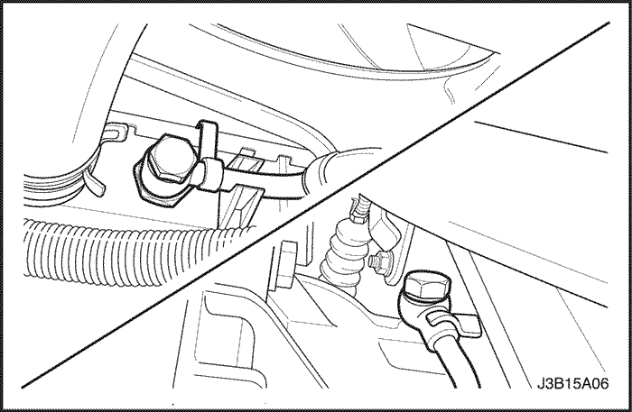
Procedimiento de montaje
- Monte el conjunto del tubo de entrada del refrigerante de aceite y los tornillos.
Apretar
Apriete los tornillos del tubo de entrada del refrigerador de aceite a 35 N•m (26 lbs-pie).
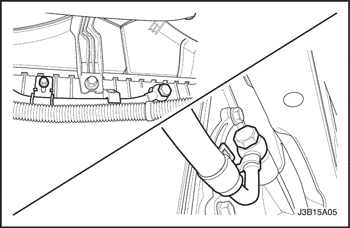
- Monte el conjunto del tubo de entrada del refrigerador de aceite y los tornillos.
Apretar
Apriete los tornillos del tubo de salida del refrigerador de aceite a 35 N•m (26 lbs-pie).
- Rellene la caja de cambios con aceite. Consulte el apartado "Procedimiento de comprobación del aceite de la caja de cambios" en esta sección.
- Monte la cubierta inferior del motor. Consulte Sección 9N, bastidor y bajos de carrocería.
- Conecte el cable negativo de la batería.

Retén de aceite del árbol de transmisión
Procedimiento de desmontaje
- Desconecte el cable negativo de la batería.
- Quite los ejes rotativos. Consulte la Sección 3A, Árbol de transmisión de la caja de cambios automática.
Aviso: Tenga cuidado de no dañar la superficie interior de la carcasa de la caja de cambios.
- Desmonte el retén de aceite de la transmisión de la caja de cambios con un destornillador. En caso necesario, aplaste primero la junta hermética con el destornillador, a fin de soltar la junta de la caja.

Herramientas necesarias
Instalador de junta hermética de eje DW260-030
Procedimiento de montaje
- Monte el retén de aceite de la transmisión de la caja de cambios, utilizando el instalador de retén de eje DW260-030.
- Instale los ejes rotativos. Consulte la Sección 3A, Árbol de transmisión de la caja de cambios automática.
- Conecte el cable negativo de la batería.
Cárter de aceite, junta de cárter de aceite
Herramientas necesarias
Desmontador/instalador de tapón DW260-070
Procedimiento de desmontaje
- Desconecte el cable negativo de la batería.
- Elevar y sostener el vehículo de forma apropiada.
- Desmonte la cubierta inferior del motor. Consulte Sección 9N, bastidor y bajos de carrocería.
- Coloque un recipiente debajo del tapón de drenaje del aceite.
- Desmonte el tapón de drenaje de aceite de la caja de cambios, utilizando el extractor / instalador de tapón DW260-070, y drene el aceite de la caja de cambios.
- Quite los tubos de entrada y salida del refrigerante de aceite. Consulte "Tubo/manguera del refrigerante de aceite" en esta sección.

- Quite el cárter de aceite y la junta.
Procedimiento de montaje
- Monte el cárter de aceite, la junta y los tornillos.
Apretar
Apriete los tornillos del cárter de aceite a 6 N•m (53 lbs-pulg.).
- Instale los tubos de entrada y salida del refrigerante de aceite. Consulte "Tubo/manguera del refrigerante de aceite" en esta sección.
- Monte el tapón de drenaje de aceite de la caja de cambios, utilizando el extractor / instalador de tapón DW260-070.
- Monte la cubierta inferior del motor. Consulte Sección 9N, bastidor y bajos de carrocería.
- Rellene la caja de cambios con aceite. Consulte el apartado "Procedimiento de comprobación del nivel de aceite de la caja de cambios" en esta sección.
- Conecte el cable negativo de la batería.
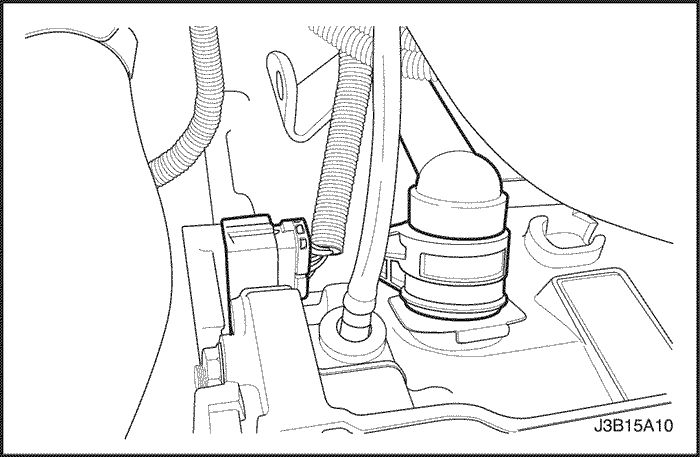
Conjunto del cuerpo de la válvula de control
Herramientas necesarias
DW260-070 Extractor / instalador de tapón
Procedimiento de desmontaje
- Desconecte el cable negativo de la batería.
- Desconecte el mazo de cables de la caja de cambios, y desenchufe el conector eléctrico del selector de posición de estacionamiento / punto muerto.
- Elevar y sostener el vehículo de forma apropiada.
- Desmonte la cubierta inferior del motor. Consulte Sección 9N, bastidor y bajos de carrocería.
- Desmonte el tapón de drenaje de aceite de la caja de cambios, utilizando el extractor / instalador de tapón DW260-070, y drene el aceite de la caja de cambios.

- Quite el cárter de aceite, la junta del cárter de aceite. Consulte "Cárter de aceite, junta del cárter de aceite" en esta sección.
- Desmonte los tornillos de montaje del cuerpo de válvulas.
- Desmonte el tornillo de montaje del sensor de velocidad de entrada de la transmisión automática.

- Desmonte el tornillo de montaje del sensor de velocidad de salida de la transmisión automática.

- Quite el cuerpo de la válvula de control.
Procedimiento de montaje
- Monte el cuerpo de las válvulas de control y los tornillos.
Apretar
Apriete los tornillos de montaje del cuerpo de válvulas a 8 N•m (71 lbs-pulg.).
- Monte el tornillo de montaje del sensor de velocidad de entrada.
Apretar
Apriete el tornillo de montaje del sensor de velocidad de entrada a 8 N•m (71 lbs-pulg.).
- Monte el tornillo de montaje del sensor de velocidad de salida.
Apretar
Apriete el tornillo de montaje del sensor de velocidad de salida a 6 N•m (53 lbs-pulg.).
- Instale el cárter de aceite y la junta. Consulte "Junta del cárter de aceite" en esta sección.
- Monte el tapón de drenaje de aceite de la caja de cambios, utilizando el extractor / instalador de tapón DW260-070.
- Monte la cubierta inferior del motor. Consulte Sección 9N, bastidor y bajos de carrocería.
- Baje el vehículo.
- Conecte el mazo de cables de la caja de cambios y enchufe el conector eléctrico del interruptor PNP.
- Rellene la caja de cambios con aceite. Consulte el apartado "Procedimiento de comprobación del nivel de aceite de la caja de cambios" en esta sección.
- Conecte el cable negativo de la batería.
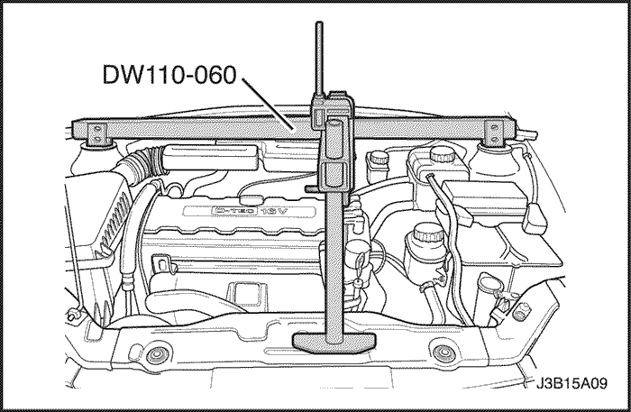
Soporte de montaje izquierdo de la caja de cambios
Herramientas necesarias
Dispositivo de soporte del motor DW110-060
Procedimiento de desmontaje
- Quite la batería. Consulte Sección 1E, motor eléctrico.
- Instale el dispositivo de soporte del motor DW110-060.
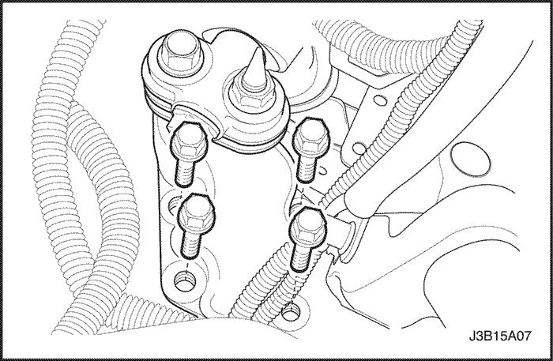
- Desmonte los tornillos de montaje del lado izquierdo de la caja de cambios.
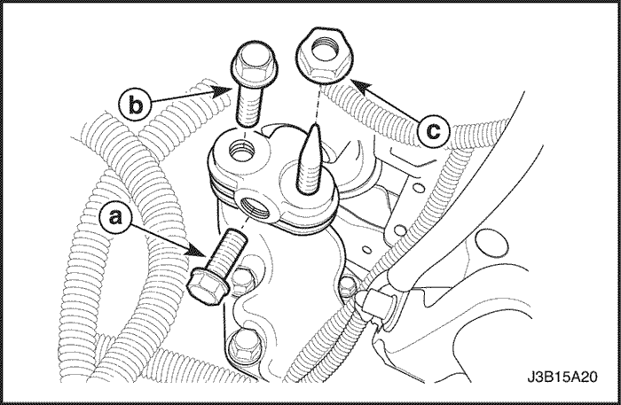
- Desmonte los tornillos y las tuercas de la caja del soporte de montaje izquierdo de la caja de cambios.
- Desmonte el soporte de montaje de la caja de cambios.
Procedimiento de montaje
- Monte los tornillos y las tuercas de la caja del soporte de montaje izquierdo de la caja de cambios.
Apretar
- Apriete el tornillo (a) de la caja del soporte de montaje izquierdo de la caja de cambios a 110 N•m (81 lbs-pie).
- Apriete el tornillo (b) de la caja del soporte de montaje izquierdo de la caja de cambios a 65 N•m (48 lbs-pie).
- Apriete la tuerca (c) a 65 N•m (48 lbs-pie).
- Apriete los tornillos de montaje del lado izquierdo de la caja de cambios a 48 N•m (35 lbs-pie).
- Quite el dispositivo de soporte del motor DW110-060.
- Instale la batería. Consulte Sección 1E, motor eléctrico.
Conjunto de la caja de cambios
Herramientas necesarias
Dispositivo de soporte del motor DW110-060
DW260-010 Dispositivo de soporte de la caja de cambios
Procedimiento de desmontaje
- Desconecte el cable negativo de la batería.
- Ponga la palanca selectora en la posición de estacionamiento.
- Quite la batería. Consulte Sección 1E, motor eléctrico.
- Instale el dispositivo de soporte del motor DW110-060.
- Desconecte el mazo de cables de la caja de cambios, de esta última.
- Desconecte el conector eléctrico del conmutador de posición de estacionamiento/neutral.
- Desmonte los clips del cable de mando del cambio de marchas y desconecte dicho cable, de la caja de cambios.

- Desmonte los tornillos superiores que sujetan la caja de cambios al motor.
- Desmonte el soporte de montaje izquierdo de la caja de cambios. Consulte el apartado "Soporte de montaje izquierdo de la caja de cambios" en esta sección.
- Elevar y sostener el vehículo de forma apropiada.
- Drene el aceite de la caja de cambios.
- Desmonte los tubos del refrigerador de aceite, de la caja de cambios. Consulte "Tubos/mangueras del refrigerante de aceite" en esta sección.

- Desmonte el árbor de transmisión. Consulte Sección 3A, Árbol de transmisión automática.
- Quite el motor de arranque. Consulte Sección 1E, motor eléctrico.
- Desmonte los tornillos del convertidor de par.
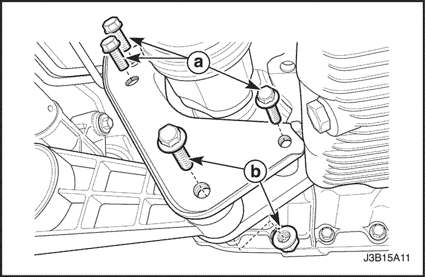
- Apoye la caja de cambios.
- Desmonte los tornillos (a) del soporte de montaje trasero de la caja de cambios y el tornillo y la tuerca (b) de conexión del bloque amortiguador.

- Apoye el conjunto de la caja de cambios, utilizando el dispositivo de soporte de la caja de cambios DW260-010.

- Desmonte los tornillos inferiores que unen el motor a la caja de cambios.

- Desmonte el conjunto de la caja de cambios.

Procedimiento de montaje
- Monte la caja de cambios en el vehículo.
- Apoye el conjunto de la caja de cambios, utilizando el dispositivo de soporte de la caja de cambios DW260-010.

- Monte los tornillos inferiores que unen el motor a la caja de cambios.
Apretar
Apriete los tornillos (a) inferiores que unen el motor a la caja de cambios a 75 N•m (55 lbs-pie).
Apriete el tornillo (b) inferior que une el motor a la caja de cambios a 21 N•m (15 lbs-pie).
Apriete el tornillo (c) inferior que une el motor a la caja de cambios a 31 N•m (23 lbs-pie).
- Monte los tornillos (a) del soporte de montaje trasero de la caja de cambios.
Apretar
Apriete los tornillos (a) del soporte de montaje trasero de la caja de cambios a 62 N•m (45 lbs-pie).
- Monte el tornillo y la tuerca (b) de la conexión del bloque amortiguador.
Apretar
Apriete el tornillo y la tuerca (b) de la conexión del bloque amortiguador a 68 N•m (50 lbs-pie).
- Monte los tornillos del convertidor de par.
- Instale el motor de arranque. Consulte Sección 1E, motor eléctrico.
- Monte el árbor de transmisión. Consulte la Sección 3A, Árbol de transmisión automática.
- Monte los tubos del refrigerador de aceite de la caja de cambios. Consulte "Tubos/mangueras del refrigerante de aceite" en esta sección.
- Baje el vehículo.
- Monte el soporte de montaje izquierdo de la caja de cambios. Consulte el apartado "Soporte de montaje izquierdo de la caja de cambios" en esta sección.
- Monte los tornillos superiores que unen la caja de cambio al motor.
Apretar
Apriete los tornillos superiores que unen la caja de cambios al motor a 75 N•m (55 lbs-pie).
- Instale las grapas del cable de control de cambios y conecte el cable de cambios.
- Instale el conector eléctrico del conmutador de posición de estacionamiento/neutral.
- Conecte el mazo de cables de la caja de cambios, a esta última.
- Quite el dispositivo de soporte del motor DW110-060.
- Instale la batería. Consulte Sección 1E, motor eléctrico.
- Añada aceite a la caja de cambios. Consulte el apartado "Procedimiento de comprobación del nivel de aceite de la caja de cambios" en esta sección.
- Conecte el cable negativo de la batería.
 | |  | |
| © Copyright Chevrolet Europe. Reservados todos los derechos |